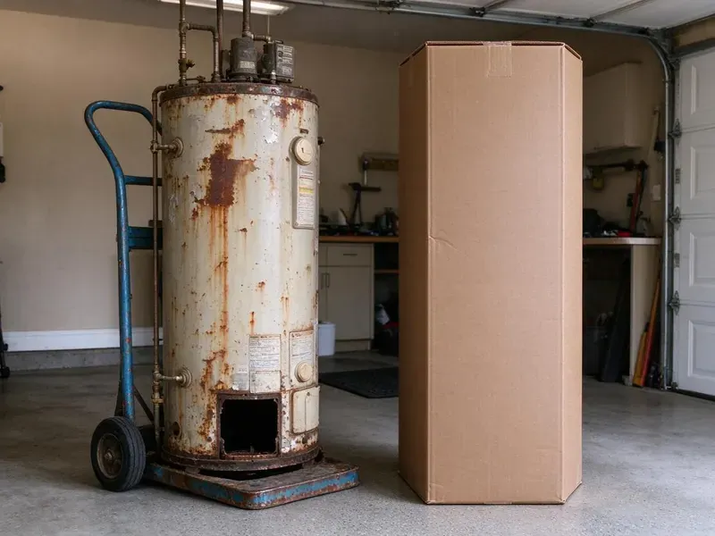

Pipe Replacement in Gillette, WY
Whole-home repipe in two to four days, walls patched and ready for paint. JKV Plumbing, Gillette, WY.
- Licensed & Insured
- Written Estimates
- Durable Pipe
- Prompt Scheduling

Clean Water and Full Pressure in Gillette, WY.
Planned openings, clean patches, and a pressure test at the end.
Replacing Failing Pipe in Gillette, WY
JKV Plumbing handles the parts people forget. Permits come first. Inspections happen before walls close, we pressure test the new system, and we patch the openings so they are ready for paint. One crew, start to finish.
Work we handle every week:
- Galvanized pipe replacement
- Pinhole-leak copper repiping
- Drywall patching after repipes

Additional Plumbing Replacement Services in Gillette, WY
When repairs are no longer enough, our replacement services in Gillette, WY deliver modern, efficient equipment installed right.


Customers
Why Choose JKV Plumbing for Pipe Replacement in Gillette, WY?
A repipe is a big decision. We do not recommend it unless the pipe is truly at the end, and we show you what we see, from corroded galvanized threads to copper with pits you can feel with a fingernail, so the decision is yours with real information. Facts first.
- Code Compliant, Permits get pulled and inspections passed.
- Tested Systems, Every new line gets pressure tested. before the walls close.
- Good Materials, PEX-a and Type L copper from major makers, listed for potable water.
Citywide Coverage
We replace pipe in homes all over Gillette, from older neighborhoods with galvanized lines to newer houses with early PEX problems. The approach changes with the home. We can usually inspect within days.
Experienced Team
Our plumbers repipe homes regularly. They know how to route lines with minimal damage. That shows up in the details, like smart routing and proper strapping. Small things matter.
Safety-First Approach
Water damage is a risk during any repipe. We keep the system off when lines are open. Every connection gets checked by hand before the water goes back on, so nothing surprises you. Careful testing.
Trusted Certified Gillette Plumbing Services Professionals
At JKV Plumbing, we are proud to offer certified plumbing services throughout Gillette, WY. Credentials matter in this trade. Every repair, install and maintenance visit follows strict safety and quality rules, and the plumbers doing the work carry recognized industry credentials.
Call Us Now PHCC Plumbing Contractor Recognition
PHCC Plumbing Contractor Recognition Better Business Bureau (BBB) Accreditation
Better Business Bureau (BBB) Accreditation Angi Certified Pro
Angi Certified Pro ISO 9001 Quality Management Certification
ISO 9001 Quality Management CertificationRepiping and Pipe Replacement Options in Gillette, WY
Full Repipes for Older Homes in Gillette
Homes from the 1950s and 1960s often still have original galvanized pipe. That pipe is worn out. A full repipe brings new PEX or copper to every fixture, improves pressure, clears up discolored water, and removes the leak risk from aging threads. Worth it.

Copper Pipe Replacement in Gillette, WY
Copper still has fans. It is durable and heat tolerant. We install Type L copper for most interior supply lines, sweat or press the joints, and support every run with hangers at the spacing code requires, so the new pipe does not rattle or sag. Costs more than PEX.
Emergency Pipe Replacement in Gillette, WY
A burst pipe needs fast action. Shut off the main valve first. Then call, because water spreading through walls and floors does damage every minute, and we can usually get there, stop the leak and replace the failed section the same day. Drying comes next.
PEX Pipe Replacement in Gillette
PEX bends around corners and comes in long rolls, so a typical repipe needs fewer fittings than copper would on the same layout. Frozen pipes are a common winter problem in Wyoming, and deep frost lines mean water service and sewer lines must be buried deep. PEX can stretch a little in a freeze instead of splitting. We use PEX-a with expansion fittings where possible, which give a full-bore connection and hold up well over time. Faster install.
Drain Pipe Replacement in Gillette, WY
Drain lines fail too. Old cast iron rusts through. We replace cracked cast iron, failing ABS or old galvanized drains with PVC, checking slope and venting so the new drains flow freely. Camera first.
Burst Pipe Repair and Replacement in Gillette, WY
Frozen pipes are a common winter problem in Wyoming, and deep frost lines mean water service and sewer lines must be buried deep. Frozen pipes split when water inside expands. Exposed pipe in crawlspaces, garages and outside walls is most at risk, so we fix it and protect it from the next freeze. Then we test it.
Slab Leak Pipe Replacement in Gillette
Rerouting is often better than digging. Jackhammering floors is a last resort. We run new pipe through the attic or walls to bypass the leaking line under the concrete, which leaves the floors alone and prevents the same line from failing again. Fast too.

Whole-Home Re-Piping in Gillette
A whole-home repipe replaces every supply line from the main shutoff to each fixture, including the water heater connections. Most single-story homes take two to three days. We run new trunk lines through the attic or crawlspace, branch down to fixtures through small wall openings, and keep water on at night whenever we can. Then patching.
Pipe Replacement Near Me in Gillette, WY
Local repiping matters because homes in an area were often built with the same materials. Streets often have the same pipe. We know which homes around Gillette tend to have galvanized, poly or thin copper, which helps us predict the scope before we inspect. Saves time.
Being close means we can come back for the inspection. An inspector usually signs off before patching. We plan our schedule in Gillette around inspection dates and drywall crews, keeping your house disrupted as briefly as possible. Then patching.
JKV Plumbing at a Glance
- Licensed and insured plumbers serving Gillette, WY
- 24/7 emergency service with same-day scheduling
- Clear written estimates, no hidden fees
- 4.9-star rated by 782+ Wyoming customers
Gillette Map
Gillette Information
- Population
- 33,496
- Area codes
- Local
- Service area
- Gillette and towns within a 40 mile drive
- Nearby
- Sheridan, Douglas, Casper, Powell
Old pipe, age, water chemistry and corrosion are why plenty of homes in Gillette, WY reach the point where repiping beats repair.
Talk to a Plumber
Call JKV Plumbing for reliable plumbing work done by licensed pros in Gillette, WY.
Our Specialized Plumbing Services in Gillette, WY
At JKV Plumbing, we handle the full list of plumbing services across Gillette, WY. We go from leak detection all the way to full system installations, for homes and commercial buildings, and we do it quickly at a fair price. Take a look at our core services below:


Our Pipe Replacement Steps in Gillette, WY
Material, routing and walls decide the approach.
Call and Describe It
Call JKV Plumbing at (307) 393-4049 and tell us what you are seeing. The location of the problem matters.
Inspect the Pipe
We check the pipe material at the meter, heater and fixtures in Gillette to see how far the damage goes.
Plan and Price
We give you a plan and a written quote. Routes and openings get mapped.
Frequently Asked Questions About Pipe Replacement in Gillette
A whole-home PEX repipe for a typical single-story home usually costs $5,000 to $12,000. Copper and larger homes can run $10,000 to $18,000, while a single section or branch often costs $500 to $3,000. Written price after inspection.
We provide a written labor warranty on every pipe replacement. Pipe makers cover the material. If a joint we made ever leaks, we come back and fix it at no charge, and the terms are on your estimate before you sign.
Supply lines get PEX-a or copper, drains get PVC. Each one is code approved.
Neither wins everywhere. PEX costs less. Copper handles heat and has a long record behind the walls of older homes, and your home decides. Both work well.
In most cities, yes. We pull the permit.
A written labor warranty from us. Pipe makers warranty the material.
Many rural homes in Wyoming draw from private wells, and well water can carry sulfate, iron or other minerals that affect taste and fixtures. A water softener or filter can help. Keep house pressure under 80 psi with a working pressure reducing valve, insulate pipes in cold areas, and fix small leaks quickly. Simple care.
Most people can, yes. Water is off during work hours only. You may lose access to a bathroom or kitchen for part of a day, and we coordinate the timing with you. Most families stay.
What Our Customers Say About Our Plumbing Experts

Robert G.
The camera showed a full break in our clay sewer line near the street. JKV Plumbing replaced it with a trenchless pipe burst, so the only digging was two small pits in the yard. They let us watch the footage before and after.
Sewer Line Replacement · Torrington, WY
Patricia H.
We had a slab leak that two other companies could not find. JKV Plumbing located it in under an hour with a listening device. They rerouted the line through the attic instead of breaking up the floor, so we kept our kitchen tile.
Slab Leak Repair · Torrington, WYAngela D.
Our sump pump quit during a storm and the water was an inch from the basement carpet. JKV Plumbing put in a new pump with a battery backup that same evening. We have had two heavy rains since. It kicked on both times.
Sump Pump · Gillette, WY
Monica A.
Our water bill nearly doubled in one month with no change in how we used water. The tech checked the meter, heard the leak under the hallway with his equipment, and opened a hole about a foot square. Fixed the same day.
Slab Leak Repair · Gillette, WY
Carlos V.
Our house still had galvanized pipe, and upstairs the shower was a trickle. The crew repiped everything in PEX over three days and patched every drywall hole before they left. The pressure difference is night and day.
Repiping · Gillette, WY
Lisa C.
Water was pouring out from under the washing machine on a holiday weekend. JKV Plumbing talked me through closing the valves over the phone and had a plumber at the house within ninety minutes. It was a burst fill hose.
Emergency Plumbing · Douglas, WY